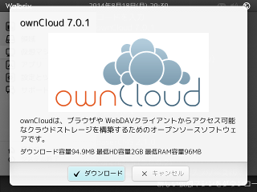

Walbrixで利用可能な仮想アプライアンスで最も人気のあるのが ownCloudのようです。といっても、弊社では正確に Walbrixの利用実態を把握しているわけではない（ぶっちゃけた話 Walbrixの利用者自体が数えるほどしかいないため集計する意味が無い）のですが。
この ownCloudを最新版に更新して Walbrixで利用出来るようにします。
Walbrixの仮想アプライアンスは私の時間がある時に追加したり更新したりしてるのですが、無料で提供しているため会社の売上に（少なくとも直接は）なりません。よって代表である私の月給も 85,000円のままビタイチ増えません。というわけで、せめて食料など恵んでいただけたら生きていけます。食料じゃなくてフィギュアなら和みます。
(owncloud.jpのフォーラム投稿より引用)
Amaznoギフト券にて 1,000円のご支援をいただきました。目標額達成となります。実行完了したらこのページでお知らせします（し、公式にアナウンスもするでしょう）。
同日追記: ownCloud仮想アプライアンスを更新し、フォーラムにて告知しました。Office文書のプレビュー生成には対応していません。（LibreOfficeを同梱すると恐ろしくサイズが大きくなるため）

{{end}}